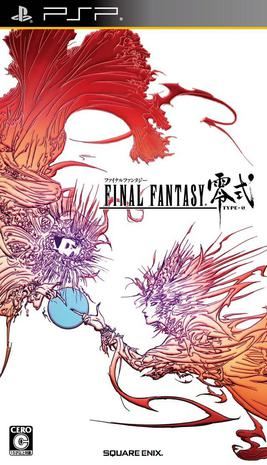
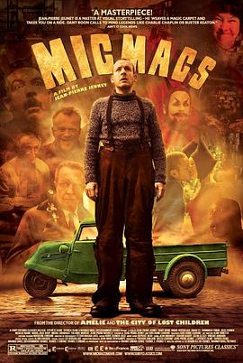

2019年2月 29 条
2019-02-26 17:46:50
想玩 蕾米罗亚 ~少女与异世界与魔导书~ レミロア ~少女と異世界と魔導書~
感觉很像单击版的冒险岛2，观望，很久没看到画面这么清醒脱俗的了
2019-02-26 17:41:01
 在玩 刺客信条：奥德赛 Assassin’s Creed Odyssey
在玩 刺客信条：奥德赛 Assassin’s Creed Odyssey
买了果断就要开玩啊（虽然游戏又囤炸了
2019-02-26 17:40:26
收藏游戏到豆列 游戏购买小账本 刺客信条：奥德赛 Assassin’s Creed Odyssey
A$49.21 amazon上买了35USD的充值卡，去美国xbox store买的67% OFF （比凸凹40% OFF良心多了）
2019-02-25 06:21:08
在看 空中浩劫 第三季 / Mayday Season 3 ★★★★★
2019-02-25 06:20:47
看过 空中浩劫 第二季 / Mayday Season 2 ★★★★★
公交观影
2019-02-23 18:21:22
看过 中国合伙人2 ★★☆☆☆
真的很失望，几个程序猿的梗玩的很无聊很无聊，程序员就真导演认为的这么蠢？这么死脑筋？剧情硬伤也很多，估计导演拍到后面发现，咦，这三人确实不是合伙人嘛，笑
2019-02-23 15:44:11
玩过 超级炸弹人R スーパーボンバーマンR ★★★★☆
故事模式通关，2d游戏3d重制版意外的有乐趣啊，唯一不太舒服的就是手柄操作太灵敏了，速度快了不太好操作 //良心gold会免，又想起来了小时候玩泡泡堂的时光
2019-02-23 00:01:50
看过 海王 / Aquaman ★★★★☆
还不错，但是总觉得还是缺点啥，是不是二王子处理的不太妥当？不管怎样，我用这个剧测试了我逆向出来的算法是正确的（听者不知所云hhh
2019-02-22 10:48:21

$18.56 AMAZON
2019-02-22 10:47:53
想玩 最终幻想 零式 FINAL FANTASY TYPE-0
XBOX ONE已入
2019-02-21 18:24:19
看过 迷幻 / Trance ★★★☆☆
看到结尾，我感觉被迷幻了
2019-02-18 19:36:46
想玩 吸血鬼 Vampyr
2019-02-18 19:21:29
 收藏游戏到豆列 游戏购买小账本 巫师3：狂猎 The Witcher 3: Wild Hunt
收藏游戏到豆列 游戏购买小账本 巫师3：狂猎 The Witcher 3: Wild Hunt
XB1 A$23.99 70%OFF
2019-02-18 19:01:18
良心会免，又想起来了小时候玩泡泡堂的时光
2019-02-17 07:44:07

经典音乐出处，不合理归不合理，看着不累很舒服
2019-02-16 16:52:27
看过 大黄蜂 / Bumblebee ★★★★☆
总感觉不够过瘾啊，可能是剧情太简单了点，跳水这个套路看到开头就能猜到结局了，总体来说还是很好看
2019-02-16 14:14:59
2019-02-15 18:17:39
看过 来电狂响 ★★★★☆
剧情无比无聊，超级无聊。。。有一点比较有意思，就是那个男的被车撞死真的是穿帮！这个让我眼前一亮讲道理！然后就是本作立意确实是我也一直在思考的。社交网络把社交变得更复杂了，父母那个年代，几乎不可能认识没见过的人，但是这个年代很多人都是先从网络上认识，然后才会见面。这是一个和上世纪相反的过程，或许很有帮助，比方说我在网络上认识了纽约的人，我去纽约的时候就真的会去找那个人喝杯咖啡或者吃顿饭什么的。对我来说，网络带来了很多便利，也没有让我吝啬我的信任，我也不会辜负他人的信任，所以要说让我玩这个游戏，乐意奉陪：）给个4星吧，哲学向作品
2019-02-12 20:35:36
看过 流浪地球 ★★★★★
最近国产好作品很多啊，作品好就给5星
2019-02-11 18:27:42
 想看 飞驰人生
想看 飞驰人生
极度无聊，需要喜剧片治愈一下
2019-02-10 06:17:05
看过 摩天营救 / Skyscraper ★★★★☆
比较标准的Johnson动作片
2019-02-09 20:35:37
看过 画皮2 / 畫皮Ⅱ ★★★☆☆
7分吧，主题曲画心好听！剧情拖沓，线太复杂，想看的地方没讲清楚，大部分画面还挺美的，就是和第一部有点违和
2019-02-09 16:42:47
 玩过 古剑奇谭三：梦付千秋星垂野 ★★★★★
玩过 古剑奇谭三：梦付千秋星垂野 ★★★★★
刚刚通关，还是很不错的，就是我的机器太烂了，又没主机板，只能15fps通关。。。几个考验操作的地方手柄延迟太大卡了半个来小时。然后几个boss战感觉真的好难啊，boss操作间隙太短了吧，还没走过去就被打飞了，然后又还没走过去又被打飞了。。。总体来说还是很棒的游戏，有点遗憾的是风晴雪的剧情好少啊。。//已买完整版，在玩。//在玩试玩版，总体来说10个开发人员能把这么大的游戏开发出来，游戏性肯定不能指望太高，然后打击感比较弱，操作挺别手，不过好歹在做出改变，这个得点赞。另外风晴雪串起来了，点赞！
2019-02-07 18:37:14
想看 流浪地球
2019-02-03 08:46:08
想看 黑镜 第五季 / Black Mirror Season 5
真香系列
2019-02-03 08:42:16
看过 黑镜：潘达斯奈基 / Black Mirror: Bandersnatch ★★★★☆
交互电影，剧情一般
2019-02-02 19:30:13
看过 毒液：致命守护者 / Venom ★★★★★
意外的对这个设定很感冒！
2019-02-02 19:28:26
想看 蜘蛛侠：平行宇宙 Spider-Man: Into the Spider-Verse (2018)
2019-02-02 02:12:43
看过 画皮 / 畫皮 ★★★★☆
音乐好听，剧情设定还不错，叙述太拖拉了